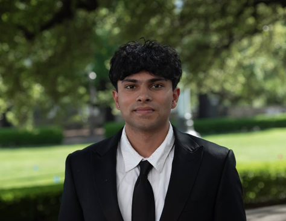

B.S. Statistics & Data Science & B.S. Mathematics · Minor in Computer Science
The University of Texas at Austin · Austin, TX
I'm an undergraduate researcher at UT Austin pursuing a double degree in Statistics & Data Science and Mathematics with a Minor in Computer Science. My research, conducted at the IDEAL Lab under Prof. Joydeep Ghosh, focuses on goal-conditioned reinforcement learning for personalized recommender systems. More broadly, I am interested in contributing to frontier ML/AI — spanning physical intelligence, reinforcement learning, and large language models. I've worked across academic research and industry in ML engineering and software development. Outside of work, I enjoy volleyball and soccer, thrifting, and cooking. I also love films (Letterboxd) and shoot film photography (@belli.cam).
B.S. Statistics & Data Science & B.S. Mathematics (Double Degree)
Minor in Computer Science
Aug 2023 – May 2027 (expected)
High School Diploma · Cupertino, CA
Integrating Collaborative and Meta-Information Retrieval with Reasoning: An End-to-End Framework for LLM-Based Recommendation
In ProgressLLM router that intelligently routes prompts across commercial APIs and Hugging Face models. Full-stack app (React + FastAPI) tracking latency, cost, and usage across 20+ models.
Python · React · FastAPI · PostgreSQL · MongoDB · vLLM · CUDA
View on GitHubAccessibility app that summarizes articles with text-to-speech for visually impaired individuals. Marketed to 10+ users improving content accessibility.
Python · Streamlit · PyTorch · Googletrans
View on GitHubML model to predict and detect sicknesses based on patient markers using Decision Trees and Random Forest.
Python · Scikit-learn · Pandas
View on GitHub